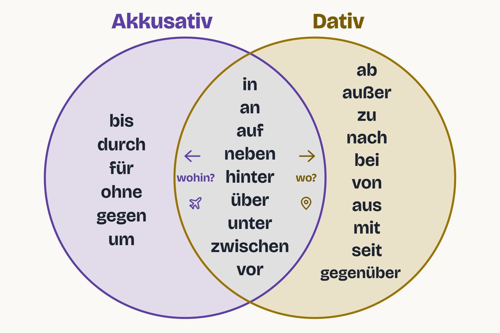

![Logo Wortando]()
![Logo Wortando]()
Apprends une langue, un mot à la fois
Connecte-toi, ou crée ton compte avec ton code d'invitation.
Connecté en tant que :
Choisis un nouveau mot de passe
Vérification du lien…
Configurons ton apprentissage
Pourquoi tu apprends l'allemand ?
Pour que ta séance parte de ce qui compte pour toi.
Tu pourras changer d'avis à tout moment, depuis ta séance du jour.
Qu'est-ce qui te ressemble le plus ?
On dosera ta séance en fonction. Tu auras toujours un peu de tout.
Un seul choix · modifiable à tout moment
Apprends l'allemand mot par mot.
Ton tuteur personnel pour la grammaire allemande et le vocabulaire.
cartes par jour
Touche les objets, écoute leur nom. Librement, sans questions.
Au départ, celui de ta séance. Le changer ici ne touche pas à ta séance.
Tout le contenu
Travailler les mots
Travailler la phrase
Pratiquer
Mon parcours
Titre
Ta progression
Comment lire ta progression
Ma séance du jour
Le compte de la séance
Les quatre boutons
La progression du vocabulaire
Le tableau
Rangé ici
Comment un mot s'installe
Le genre des noms
Les terminaisons qui trahissent le genre
Tes tableaux
Ta galerie
Chercher un mot allemand ou français
Verbes par niveau
Exercices ciblés sur la conjugaison au présent.
Teste ta connaissance du cas gouverné par les verbes déjà vus (Akkusativ, Dativ...).
Noms & Thèmes
Chargement des thèmes...
Noms par niveau
Chapitres VHS
Adjectifs par niveau
Comprendre les cas
Der Mann liest. (L'homme lit.)
Ich sehe den Mann. (Je vois l'homme.)
Ich gebe dem Mann das Buch. (Je donne le livre à l'homme.)
Das Buch des Mannes. (Le livre de l'homme.)
La terminaison, elle, porte le cas et le genre : -n (masculin Akkusativ), -m (Dativ masc./neutre), -r (Dativ et Genitiv féminins), -s (Genitiv masc./neutre), -e (féminin et pluriel).
Tu n'as donc pas trois tableaux à retenir, mais un seul — et trois débuts sur lesquels le poser.
Ce n'est pas un détail : c'est exactement pour ça que l'adjectif change de terminaison après « ein » — c'est lui qui doit porter le signal manquant (ein guter Mann, mais der gute Mann).
| masc. | fém. | neutre | pluriel |
| masc. | fém. | neutre | pluriel |
| masc. | fém. | neutre | pluriel |
Déclinaison des adjectifs
| masc. | fém. | neutre | pluriel | |
| Nom. | -e | -e | -e | -en |
| Akk. | -en | -e | -e | -en |
| Dat. | -en | -en | -en | -en |
| Gen. | -en | -en | -en | -en |
| masc. | fém. | neutre | pluriel | |
| Nom. | -er | -e | -es | -en |
| Akk. | -en | -e | -es | -en |
| Dat. | -en | -en | -en | -en |
| Gen. | -en | -en | -en | -en |
| masc. | fém. | neutre | pluriel | |
| Nom. | -er | -e | -es | -e |
| Akk. | -en | -e | -es | -e |
| Dat. | -em | -er | -em | -en |
| Gen. | -en | -er | -en | -er |
Comprendre les prépositions

Certaines prépositions se contractent avec l'article défini (dem/das/der) quand celui-ci n'est pas particulièrement souligné — très fréquent à l'oral comme à l'écrit.
Ich warte am Bahnhof. (J'attends à la gare.)
Ich gehe ans Fenster. (Je vais à la fenêtre.)
Ich freue mich aufs Wochenende. (Je me réjouis du week-end.)
Ich bin beim Arzt. (Je suis chez le médecin.)
Das ist gut fürs Team. (C'est bon pour l'équipe.)
Ich bin im Büro. (Je suis au bureau.)
Ich gehe ins Kino. (Je vais au cinéma.)
Ich komme vom Supermarkt. (Je viens du supermarché.)
Ich gehe zum Arzt. (Je vais chez le médecin.)
Ich gehe zur Schule. (Je vais à l'école.)
bis, durch, für, gegen, ohne, um
Das Geschenk ist für dich. (Le cadeau est pour toi.)
ab, aus, außer, bei, gegenüber, mit, nach, seit, von, zu
Ich komme aus der Schweiz. (Je viens de Suisse.)
während, trotz, wegen
Wegen des Regens bleiben wir zu Hause. (À cause de la pluie, on reste à la maison.)
Das Buch liegt auf dem Tisch. (Le livre est sur la table — pas de mouvement.)
Ich lege das Buch auf den Tisch. (Je pose le livre sur la table — déplacement vers un endroit.)
Das Buch liegt auf dem Tisch. (Le livre est sur la table — état, pas de mouvement.)
Ich lege das Buch auf den Tisch. (Je pose le livre sur la table — je le déplace vers cet endroit.)
| Präsens | Perfekt | Präteritum | |
| stehen | steht | hat gestanden | stand |
| liegen | liegt | hat gelegen | lag |
| sitzen | sitzt | hat gesessen | saß |
| hängen | hängt | hat gehangen | hing |
| Präsens | Perfekt | Präteritum | |
| stellen | stellt | hat gestellt | stellte |
| legen | legt | hat gelegt | legte |
| setzen | setzt | hat gesetzt | setzte |
| hängen | hängt | hat gehängt | hängte |
Comprendre les particules
Mach das doch! (Vas-y, fais-le donc !)
Komm mal her! (Viens un peu par ici.)
Was machst du denn? (Qu'est-ce que tu fais donc ?)
Das ist eben so. (C'est comme ça, un point c'est tout.)
Das wird wohl stimmen. (Ça doit sûrement être vrai.)
Das ist ja klar! (Mais c'est évident, voyons !)
Das schaffst du schon! (T'inquiète, tu vas y arriver.)
Das ist aber schön! (Ça alors, que c'est beau !)
Was machst du eigentlich? (Au fait, qu'est-ce que tu fais ?)
Geh bloß nicht dahin! (Ne va surtout pas là-bas !)
Du kannst ruhig fragen. (Tu peux demander sans problème.)
Sag es einfach! (Dis-le, tout simplement.)
Das ist vielleicht ein Chaos! (Quel bazar, quand même !)
Comprendre les adverbes
Pronoms personnels et réfléchis
Démonstratifs et indéfinis
Les nombres
Comprendre les expressions
Vocabulaire : flashcards
Choisis d'abord un niveau : la liste des familles juste en dessous s'ajuste au niveau choisi.
Les expressions se retiennent par situation : saluer, donner son avis, nuancer.
Vocabulaire : flashcards
Choisis d'abord un niveau : la liste des familles juste en dessous s'ajuste au niveau choisi.
Les adverbes s'apprennent en opposant les mots d'une même famille : immer, oft, manchmal, selten, nie.
Module
Comprendre les conjonctions
Ich bin müde, aber ich arbeite weiter. (Je suis fatigué, mais je continue à travailler — « arbeite » reste en 2ème position.)
Ich bleibe zu Hause, weil ich krank bin. (Je reste à la maison parce que je suis malade — « bin » va à la fin.)
Comprendre l'examen
Comprendre l'ordre des mots
Ich gehe heute ins Kino. → Heute gehe ich ins Kino. (Aujourd'hui, je vais au cinéma.)
Ich bleibe zu Hause, weil ich krank bin. (Je reste à la maison parce que je suis malade.)
Kommst du mit? (Tu viens ?) — Wann kommst du? (Quand viens-tu ?)
Ich fahre morgen wegen der Ferien mit dem Zug nach Berlin. (Je pars demain, à cause des vacances, en train, à Berlin.)
Ich verstehe das nicht. (Je ne comprends pas ça.) — Ich komme nicht heute, sondern morgen. (Je ne viens pas aujourd'hui, mais demain.)
Pronoms relatifs — Nominativ, Akkusativ, Dativ
Ich kenne den Mann. Der Mann wohnt hier. → Ich kenne den Mann, der hier wohnt. (Je connais l'homme qui habite ici.)
| masc. | fém. | neutre | pluriel | |
| Nom. | der | die | das | die |
| Akk. | den | die | das | die |
| Dat. | dem | der | dem | denen |
Das ist das Buch, das ich gestern gekauft habe. (C'est le livre que j'ai acheté hier.)
Das ist die Frau, die ich kenne. (die = féminin parce que « die Frau » est féminin, pas parce que « ich ».)
Pronoms relatifs — Genitiv
Das ist der Mann. Sein Auto ist kaputt. → Das ist der Mann, dessen Auto kaputt ist. (C'est l'homme dont la voiture est en panne.)
| masc. | fém. | neutre | pluriel |
| dessen | deren | dessen | deren |
Das ist die Frau, deren Sohn Lehrer ist. (deren = féminin parce que « die Frau » est féminin, même si « Sohn » est masculin.)
S'entraîner par temps
Ich spiele, du spielst, er spielt. (Je joue, tu joues, il joue.)
Ich ging ins Kino. Ich spielte Fußball. (J'allais au cinéma. Je jouais au football.)
Ich habe gespielt. Ich bin gegangen. (J'ai joué. Je suis allé.)
Ich wäre gern reich. Ich würde mehr reisen. (J'aimerais être riche. Je voyagerais davantage.)
er spielt → spielen. sie ist gegangen → gehen.
Comprendre les possessifs
mein Bruder (der Bruder, masc., pas de terminaison) · meine Schwester (die Schwester, fém., -e) · mein Kind (das Kind, neutre, pas de terminaison) · meine Eltern (pluriel, -e)
Accusatif : meinen · meine · mein · meine (pl.)
Datif : meinem · meiner · meinem · meinen (pl.)
Génitif : meines · meiner · meines · meiner (pl.)
(ordre : masculin · féminin · neutre · pluriel)
Wo sind eure Schuhe? (Où sont vos chaussures ?)
Comprendre « zu » + infinitif
Ich kann gut schwimmen. (Je sais bien nager.)
Ich gehe schwimmen. (Je vais nager.)
Ich sehe die Kinder spielen. (Je vois les enfants jouer.)
Ich höre ihn singen. (Je l'entends chanter.)
Ich lasse mein Auto reparieren. (Je fais réparer ma voiture.)
Lass mich das machen! (Laisse-moi le faire !)
Er blieb stehen. (Il s'est arrêté / est resté debout.)
Bleib sitzen! (Reste assis !)
Ich fand ihn schlafen. (Je l'ai trouvé en train de dormir.)
Ich habe das Bild an der Wand hängen. (J'ai le tableau accroché au mur.)
Ich versuche, Deutsch zu lernen. (J'essaie d'apprendre l'allemand.)
anfangen → Ich habe vor, anzufangen. (J'ai l'intention de commencer.)
Du brauchst nicht zu kommen. (Tu n'as pas besoin de venir.)
Ich lerne Deutsch, um in Berlin zu arbeiten. (J'apprends l'allemand afin de travailler à Berlin.)
Er ging, ohne zu grüßen. (Il est parti sans dire bonjour.)
Sie las, statt zu schlafen. (Elle a lu au lieu de dormir.)
Les mots que les programmes officiels retiennent en premier.
Ma séance du jour
Par quoi commences-tu ?
Mon carnet de phrases
Les phrases toutes faites de tes escales, à ouvrir sur place. Touche une phrase pour l'entendre.
Mes feuilles
Les feuilles de conjugaison de ton niveau. Touche une feuille pour l'ouvrir, puis une ligne pour l'entendre.
Cartes
Écouter et répéter
Une séance mains libres : l'app dit le mot, laisse un silence pour que tu le répètes à voix haute, puis lit la phrase d'exemple. Garde l'écran allumé — la voix se tait si le téléphone se verrouille.
Une phrase est dite, jamais écrite : choisis ce qu'elle veut dire. Elle s'affiche ensuite, à relire en la réécoutant. Cet exercice-ci compte dans ta progression.
Le modèle, puis toi, l'un après l'autre. C'est de s'entendre qui fait entendre l'écart — l'écouter en répétant ne suffit pas. Rien n'est noté et rien n'est envoyé : l'enregistrement reste sur l'appareil et disparaît à la phrase suivante.
S'entendre le dire
Écouter et répéter
L'écoute ne modifie pas ta progression : c'est une révision passive, pas un test.
Construire la phrase
On te donne la phrase en français et les mots allemands en vrac. Touche-les dans le bon ordre — pas de clavier. Le banc contient un ou deux mots en trop, choisis dans la même famille que ceux de la phrase : c'est là que se joue l'exercice.
Verbes · Präsens
Très bien !
—
Révision basée sur tes erreurs.Réglages
Langue
Reçois une notification quand tu n'as pas encore atteint ton objectif du jour.
Son
Pour toute l'application : cartes, phrases, scènes et prononciation. La voix ralentit sans devenir plus grave. Le mode Écouter garde son propre réglage.
Ton appareil propose parfois plusieurs voix pour la même langue : une voix compacte, mécanique, et une voix améliorée beaucoup plus naturelle. L'étoile signale les meilleures.
Au verso d'une carte, l'allemand se dit tout seul. Choisis ce que tu veux entendre. Ce que tu retires reste affiché, et son haut-parleur fonctionne toujours — tu peux l'écouter quand tu le décides.
Par defaut, l'application prend le son pour elle : ta musique s'arrete quand tu commences une seance, mais tu entends la prononciation meme si le bouton silencieux de ton telephone est baisse.
⚠️ Si tu laisses la musique jouer, l'application n'emettra plus AUCUN son quand le bouton silencieux est baisse.
Ma progression
Compte, aide et rétroaction
Un mot qui sonne mal, un bouton qui ne répond pas, une idée : écris-le ici. La version de l'app et l'écran où tu étais sont joints automatiquement — tu n'as rien à noter.
Tu apprends avec Wortando ? Partage-le avec quelqu'un qui voudrait apprendre l'allemand ou l'anglais.
Connecté en tant que :
Efface définitivement ton compte.
Quatre façons de remettre des compteurs, de la plus douce à la plus définitive. Chacune demande confirmation.
Retire tous les mots de ton coffre. Ta progression n'est pas touchée : seule la marque « gardé » disparaît. Remet en circulation les mots classés maîtrisés, sans effacer ta progression ni ton pourcentage.Voix allemande : Aurora, générée avec ElevenLabs.
Dictionnaire : WikDict, d'après le Wiktionnaire — licence CC BY-SA 4.0.
Comparatifs et superlatifs des adjectifs : Wiktionnaire allemand et anglais (via kaikki.org) — licence CC BY-SA 4.0.
Animation d'ouverture : Created with Grok.
Fréquence d'usage : Leipzig Corpora Collection — © Universität Leipzig / Sächsische Akademie der Wissenschaften / InfAI, CC BY ; et OPUS OpenSubtitles (Lison & Tiedemann, 2016), d'après opensubtitles.org.
Examens : Wortando n'est affilié ni au Goethe-Institut ni à telc, et n'est approuvé par aucun des deux. Leurs listes officielles servent uniquement de référence pour mesurer la couverture du vocabulaire.
Wortando™ est une marque de commerce.